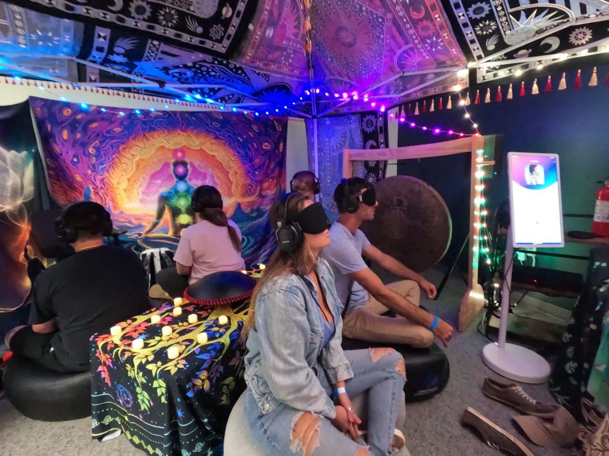
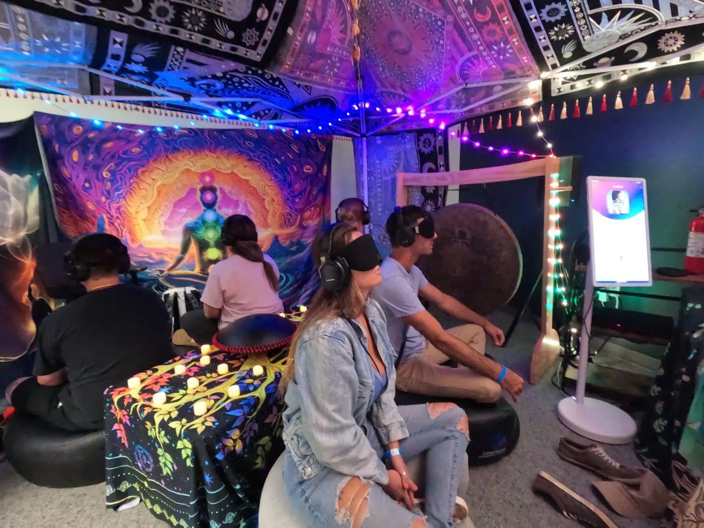

A 3-Day Trauma-Informed Integration Experience
The Reminder Experience
Nothing to fix. Nothing to become. Just remember.


 

“The breathwork sessions were my favorite part. They were gentle, grounding, and never overwhelming. I felt my nervous system settle without being pushed into anything.”
— Sarah M., October 2025What This Is
A professionally guided, trauma-informed integration experience focused on nervous system regulation, awareness, and embodied presence. This is not a retreat, ceremony, or performance-based transformation. It is a structured, contained experience designed for safety, pacing, and integration.
“The closing ceremony and final sound bath helped everything settle. I left feeling regulated, clear, and complete — not emotionally cracked open or overwhelmed.”
— Mark D., November 2025What’s Included
A curated set of evidence-informed modalities delivered in a paced, professionally held container.

Breathwork
Guided, trauma-informed breathwork focused on regulation, awareness, and embodied presence.
EMDR-Informed Integration (Non-Reprocessing)
Grounded integration support using EMDR-informed principles without reprocessing inside the group container.

Sound Bath
Group sound baths supporting downshifting, coherence, and integration.

SoundSelf Immersive Awareness
An immersive sound-based experience designed to support self-observation, presence, and deep inner listening.
Vibroacoustic Therapy (VAT)
Vibration + sound delivered through a specialized table to support nervous system settling and embodied regulation.
Mirror Mind Neural Reflection
Real-time neural reflection for awareness and insight — no stimulation, no training, just observation.
Also included
- Trauma-informed facilitation and psychological safety
- Nervous system education, pacing expectations, and group agreements
- Mindfulness and somatic practices
- Structured group integration and meaning-making
Participant Reflections
Recent reflections from participants.
“The morning Qigong, mindfulness movement, and breathwork created a strong foundation for each day. I felt grounded and present before moving into any deeper work.”
— Chris N., November 2025“The EMDR-informed integration was handled with care and professionalism. It supported awareness and insight without pushing trauma processing, which made me feel safe.”
— Anna B., December 2025“SoundSelf stood out for me. The immersive experience allowed me to drop into awareness quickly, without effort or pressure. It felt supportive rather than intense.”
— Emily T., December 2025“The Vibroacoustic Therapy sessions were incredibly regulating. The sound and vibration helped release tension in a way that felt natural and contained.”
— Michael L., October 2025“The sound baths were deeply calming. I’ve done sound baths before, but these were clearly designed for integration and nervous system regulation, not emotional overload.”
— Rachel K., November 2025“The Medicine Wheel sound bath on the beach was one of the most meaningful parts of the weekend. The structure and setting allowed for reflection without forcing interpretation.”
— David S., December 2025
Neural Reflection & Awareness Technology
Non-invasive neural reflection technology (Mirror Mind) is used solely for self-observation and insight. There is no stimulation, no training, and no diagnosis — just real-time awareness of internal states.
“Mirror Mind was surprisingly impactful. Seeing my internal state reflected visually helped me notice subtle shifts without needing to analyze or explain them. It felt simple, clear, and grounding.”
— James R., November 2025Itinerary
A clean, paced container with preparation, immersion, and structured integration — designed for safety, consent, and carry-forward.
Pre-Experience Preparation (Required)
Completed a minimum of one week prior. All participants complete a brief 1:1 preparation process with a facilitator to support readiness, safety, and alignment.
This preparation supports a safe, contained, and fully engaged group experience.
- Biopsychosocial screening
- Nervous system education and pacing expectations
- Intention setting and goal clarification
- Review of group agreements, consent, and boundaries
- Orientation to experiential modalities
Friday — Arrival & Orientation
Grounding, consent, orientation, and foundational regulation practices to establish the container.
Welcome, registration, grounding orientation, and introductions.
Group agreements, psychological safety, consent, and expectations for full engagement within the container.
Guided, trauma-informed breathwork focused on regulation, awareness, and embodied presence.
Small-group rotations through:
- EMDR-informed integration (non-reprocessing)
- Vibroacoustic Therapy (VAT)
- SoundSelf immersive awareness
- Mirror Mind neural reflection (baseline)
Group sound bath for nervous system settling and integration.
Saturday — Immersion & Integration
Movement, sound, and rotations designed to support reflection, coherence, and meaning-making.
Gentle movement, breath, and somatic awareness to establish rhythm and grounding.
Structured sound experience supporting reflection, coherence, and embodied awareness.
Personal time for rest, nourishment, and integration.
Participants rotate through:
- Vibroacoustic Therapy (VAT)
- EMDR-informed integration (non-reprocessing)
- SoundSelf immersive awareness
- Mirror Mind neural reflection
- Individual sound tuning fork session
Facilitated group reflection focused on meaning-making, connection, and containment.
Quiet integration, journaling, or rest.
Sunday — Integration & Closure
Choice-based stations, closing ceremony, and grounded re-entry support.
Gentle, regulating practices to support integration and transition.
Participants choose one focused experience:
- Vibroacoustic Therapy (VAT)
- EMDR-informed integration (non-reprocessing)
- SoundSelf immersive awareness
- Mirror Mind neural reflection
Personal time for rest, nourishment, and integration.
Guided meditation, group reflection, and a closing sound bath to support continuity, grounding, and re-entry into daily life.
Thank you for honoring the container and your own integration process.
Who This Is For
Adults seeking depth with safety. Those who value professional guidance, ethical containment, and calm intentional spaces over high-intensity experiences.
“I appreciated the choice-based stations, especially being able to select between Mirror Mind, VAT, SoundSelf, and EMDR-informed integration. Having choice made the experience feel respectful and empowering.”
— Lauren P., October 2025Private Group Option
Prefer a private container for you and your own group, without other participants? A limited number of private bookings may be available by request.
Reserve the experience privately
Private bookings require advance planning for staffing, pacing, and ethical oversight. Please contact us in advance to explore dates and fit.
Application & Inquiries
Use this form to apply, request details, or inquire about a private group booking.